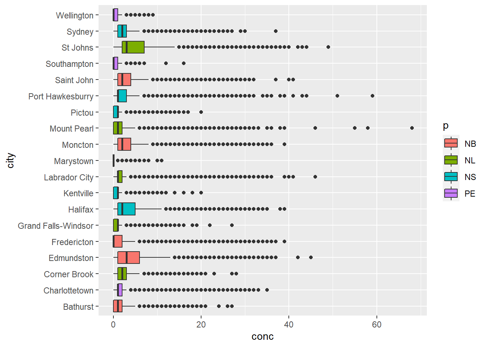

Chapter 13 Summarizing Data
Summarizing data is what it sounds like. You’re reducing the number of rows in your dataset based on some predetermined method. Taking the average of a group of numbers is summarizing the data. Many numbers have been condensed to one: the average. In this chapter we’ll go over summarizing data, and some aesthetic changes we can make for publication ready tables.
13.1 Data to play with
We’ll take a look at the 2018 hourly mean NO2 concentrations for the Atlantic provinces (New Brunswick, Prince Edward Island, Nova Scotia, and Newfoundland). The dataset is available in the R4EnvChem Project Template repository. Also if you’re keen, you can download any number of atmospheric datasets from Environment and Climate Change Canada’s (ECCC) National Airborne Pollution Program’s (NAPS) website here
Since ECCC stores their NAPS data in a matrix layout, we need to briefly tidy it up:
atlNO2 <- read_csv("data/2018hourlyNO2_Atl.csv", skip = 7, na =c("-999")) %>%
rename_with(~tolower(gsub("/.*", "", .x))) %>%
pivot_longer(cols = starts_with("h"),
names_prefix = "h",
names_to = "hour",
names_transform = list(hour = as.numeric),
values_to = "conc",
values_transform = list(conc = as.numeric),
values_drop_na = TRUE)
# First 50 rows of dataset
DT::datatable(atlNO2[1:50, ])Note in our dataset that both Halifax NS and Saint John NB have three NAPS stations each. It won’t matter for our aggregation, but if we were exploring this data in more depth this is something we would want to take into account.

13.2 Summarizing data by group
While we can readily summarize an entire dataset, we often want to summarize groups within our dataset. In our case, it’s [NO2] in each city. To this end, we need to combine thegroup_by() and summarize() functions. summarise() also works for the Americans. This approach allows us to (1) specify which groups we want summarized, and (2) how we want them summarized. We’ll talk more about point (2) later on, for now, let’s look at point (1)
Let’s calculate the mean hourly NO2 concentrations in the 4 provinces in our dataset:
## # A tibble: 4 × 2
## p mean
## <chr> <dbl>
## 1 NB 2.86
## 2 NL 2.30
## 3 NS 2.36
## 4 PE 0.975That’s it. 186339 unique rows summarized like that. Note that summarize produces a new data frame, so you’ll want to double check on the outputted data types. Let’s break down what our code does:
- We’re creating a new data frame, so we store it in
sumAtl. - We then take our
atlNO2dataset and group our dataset by province usinggroup_by(p). - We then summarize our grouped data by summarizing the NO2 concentration with
summarize(mean = mean(conc).- Note that since we’re creating a new data set, we need to create new columns. This is what
mean = mean(conc)does. We’re creating a column called mean, which contains the numerical mean 1-hr NO2 values which were calculated using themean()function. Simple…
- Note that since we’re creating a new data set, we need to create new columns. This is what
Let’s dig a little deeper. The Canadian Ambient Air Quality Standards stipulates that the annual mean of 1-hour means for NO2 cannot exceed 17.0 ppb in 2020, and 12.0 ppb in 2025. Let’s see if any city in our dataset violated these standards in 2018.
To do this, we’ll group by province (p) and city (city). This will retain our provinces column that we might want to use later on.
## # A tibble: 19 × 3
## # Groups: p [4]
## p city mean
## <chr> <chr> <dbl>
## 1 NB Bathurst 1.21
## 2 NB Edmundston 4.52
## 3 NB Fredericton 1.82
## 4 NB Moncton 3.37
## 5 NB Saint John 3.02
## 6 NL Corner Brook 2.71
## 7 NL Grand Falls-Windsor 0.918
## 8 NL Labrador City 2.51
## 9 NL Marystown 0.277
## 10 NL Mount Pearl 1.53
## 11 NL St Johns 5.33
## 12 NS Halifax 3.44
## 13 NS Kentville 0.841
## 14 NS Pictou 1.19
## 15 NS Port Hawkesburry 2.53
## 16 NS Sydney 2.66
## 17 PE Charlottetown 1.85
## 18 PE Southampton 0.512
## 19 PE Wellington 0.455Looks like there aren’t any offenders. For tips on visualizing these results please see the [Visualizations] chapter.
13.2.1 Further summarize operations
There are other options we can use to summarize out data. A handy list is provided on the summarize() help page. The most common ones you’ll need are:
mean()which calculates the arithmetic mean, a.k.a. the average.median()which calculates the sample median, the value separating the higher 50% of data from the lower 50% of a data sample.sd()which calculates the sample standard deviation.min()andmax()which returns the smallest and largest value in the dataset.n()which provides the number of entries in a group. Note you don’t specify a variable for n.
Let’s seem them in action:
sumAtl <- atlNO2 %>%
group_by(p, city) %>%
summarize(mean = mean(conc),
sd = sd(conc),
min = min(conc),
max = max(conc),
n = n())
sumAtl## # A tibble: 19 × 7
## # Groups: p [4]
## p city mean sd min max n
## <chr> <chr> <dbl> <dbl> <dbl> <dbl> <int>
## 1 NB Bathurst 1.21 1.91 0 27 8755
## 2 NB Edmundston 4.52 4.82 0 45 8756
## 3 NB Fredericton 1.82 4.04 0 39 8729
## 4 NB Moncton 3.37 4.71 0 39 8749
## 5 NB Saint John 3.02 4.04 0 41 26051
## 6 NL Corner Brook 2.71 2.47 0 28 8505
## 7 NL Grand Falls-Windsor 0.918 1.26 0 27 7746
## 8 NL Labrador City 2.51 4.05 0 46 8612
## 9 NL Marystown 0.277 0.635 0 11 7142
## 10 NL Mount Pearl 1.53 2.82 0 68 8522
## 11 NL St Johns 5.33 6.14 0 49 8670
## 12 NS Halifax 3.44 4.19 0 39 17591
## 13 NS Kentville 0.841 1.22 0 20 8640
## 14 NS Pictou 1.19 1.52 0 20 8515
## 15 NS Port Hawkesburry 2.53 4.29 0 59 8601
## 16 NS Sydney 2.66 2.93 0 37 8675
## 17 PE Charlottetown 1.85 2.87 0 35 8690
## 18 PE Southampton 0.512 0.683 0 16 6799
## 19 PE Wellington 0.455 0.747 0 9 8591Note that the functions we pass to summarize adhere to rules of missing values. That is to say, if even one value in a group is an NA, the entire group defaults to NA. Consequently, if your confident this isn’t an issue, you can pass the argument na.rm = TRUE to any of the summarize functions, which would look like mean = mean(conc, na.rm = TRUE). This will ignore any NA values and return a numeric value like you probably expect.
13.3 Pretty tables with flextable
While the summarize function does an excellent job of summarizing our data, the outputted dataset isn’t really fit for publication. This is doubly so if you used summarize as the last step of your chemical quantification and you want a nice and pretty table of mean sample concentration with standard deviations.
To this end we’ll use the ‘flextable’ package. Please refer to flextable R package. There are other packages to make tables, but we’re using flextable as it’s consistent between HTML and PDF outputs.
p | city | mean | sd | min | max | n |
|---|---|---|---|---|---|---|
NB | Bathurst | 1.2133638 | 1.9068865 | 0 | 27 | 8,755 |
NB | Edmundston | 4.5189584 | 4.8193387 | 0 | 45 | 8,756 |
NB | Fredericton | 1.8243785 | 4.0444904 | 0 | 39 | 8,729 |
NB | Moncton | 3.3702137 | 4.7126128 | 0 | 39 | 8,749 |
NB | Saint John | 3.0226479 | 4.0382273 | 0 | 41 | 26,051 |
NL | Corner Brook | 2.7084068 | 2.4696380 | 0 | 28 | 8,505 |
NL | Grand Falls-Windsor | 0.9175058 | 1.2614504 | 0 | 27 | 7,746 |
NL | Labrador City | 2.5062703 | 4.0540802 | 0 | 46 | 8,612 |
NL | Marystown | 0.2766732 | 0.6349850 | 0 | 11 | 7,142 |
NL | Mount Pearl | 1.5341469 | 2.8249929 | 0 | 68 | 8,522 |
NL | St Johns | 5.3297578 | 6.1384817 | 0 | 49 | 8,670 |
NS | Halifax | 3.4383492 | 4.1871164 | 0 | 39 | 17,591 |
NS | Kentville | 0.8410880 | 1.2186010 | 0 | 20 | 8,640 |
NS | Pictou | 1.1937757 | 1.5180486 | 0 | 20 | 8,515 |
NS | Port Hawkesburry | 2.5254040 | 4.2856534 | 0 | 59 | 8,601 |
NS | Sydney | 2.6610951 | 2.9300039 | 0 | 37 | 8,675 |
PE | Charlottetown | 1.8513234 | 2.8669404 | 0 | 35 | 8,690 |
PE | Southampton | 0.5115458 | 0.6831778 | 0 | 16 | 6,799 |
PE | Wellington | 0.4554767 | 0.7471108 | 0 | 9 | 8,591 |
Perhaps that isn’t pretty enough for you. Doubtlessly your instructor will tell you to combine the mean and standard deviation into one value (i.e. \(mean \pm sd\)). We’ll do this in two steps.
- Step 1: Use
unite()to merge themeanandsdvalues together rowise; values will be separated by ±.- ± is a legit symbol, try
Alt+241or copy and paste it from this book.
- ± is a legit symbol, try
- Step 2: Pretty up our table to significant digits, and perform some aesthetic changes.
13.3.1 Uniting columns
Firstly, our mean and sd columns contain way too many decimal places. We’ll need to round them down before we use unite() to paste together the two columns into one. During our unite() call, we’ll use sep = " ± " to separate the mean from sd values (otherwise they’d be pasted as one long number).
prettySumAtl <- sumAtl %>%
mutate(mean = sprintf("%.1f", mean),
sd = sprintf("%.1f", sd)) %>%
unite("mean ± sd", mean:sd, sep = " ± " ) %>%
select(-n) # removing n column
prettySumAtl## # A tibble: 19 × 5
## # Groups: p [4]
## p city `mean ± sd` min max
## <chr> <chr> <chr> <dbl> <dbl>
## 1 NB Bathurst 1.2 ± 1.9 0 27
## 2 NB Edmundston 4.5 ± 4.8 0 45
## 3 NB Fredericton 1.8 ± 4.0 0 39
## 4 NB Moncton 3.4 ± 4.7 0 39
## 5 NB Saint John 3.0 ± 4.0 0 41
## 6 NL Corner Brook 2.7 ± 2.5 0 28
## 7 NL Grand Falls-Windsor 0.9 ± 1.3 0 27
## 8 NL Labrador City 2.5 ± 4.1 0 46
## 9 NL Marystown 0.3 ± 0.6 0 11
## 10 NL Mount Pearl 1.5 ± 2.8 0 68
## 11 NL St Johns 5.3 ± 6.1 0 49
## 12 NS Halifax 3.4 ± 4.2 0 39
## 13 NS Kentville 0.8 ± 1.2 0 20
## 14 NS Pictou 1.2 ± 1.5 0 20
## 15 NS Port Hawkesburry 2.5 ± 4.3 0 59
## 16 NS Sydney 2.7 ± 2.9 0 37
## 17 PE Charlottetown 1.9 ± 2.9 0 35
## 18 PE Southampton 0.5 ± 0.7 0 16
## 19 PE Wellington 0.5 ± 0.7 0 9Note to round the numbers we used sprintf() to round out numbers. This is because in the final publication it’s important to keep trailing zeros (i.e. 1.0 and not 1), but R’s round() will drop these. mean = sprintf("%.1f", mean) takes the existing values in the mean column, rounds them to one digit, that’s what "%.1f" means (“%.2f” would be two digits and so on), and paste them back into the mean column. Same situation for the sd column.
13.3.2 Pretty tables
Now we’ll want to make a pretty table. Despite the emphasis on visualizations in this book, tables are an under appreciate means to convey information. Often when you’re only plotting a handful of numbers, a table would better serve the reader. So don’t overlook this point of your report. If you’ve distilled hours of your work to a handful of numbers, you best serve them up on a silver platter.
ft <- flextable(prettySumAtl)
ft <- set_header_labels(ft,
p = "province")
ft <- set_table_properties(ft, layout = "autofit")
ft <- align(ft, j = "mean ± sd", align = "right", part = "all")
ftprovince | city | mean ± sd | min | max |
|---|---|---|---|---|
NB | Bathurst | 1.2 ± 1.9 | 0 | 27 |
NB | Edmundston | 4.5 ± 4.8 | 0 | 45 |
NB | Fredericton | 1.8 ± 4.0 | 0 | 39 |
NB | Moncton | 3.4 ± 4.7 | 0 | 39 |
NB | Saint John | 3.0 ± 4.0 | 0 | 41 |
NL | Corner Brook | 2.7 ± 2.5 | 0 | 28 |
NL | Grand Falls-Windsor | 0.9 ± 1.3 | 0 | 27 |
NL | Labrador City | 2.5 ± 4.1 | 0 | 46 |
NL | Marystown | 0.3 ± 0.6 | 0 | 11 |
NL | Mount Pearl | 1.5 ± 2.8 | 0 | 68 |
NL | St Johns | 5.3 ± 6.1 | 0 | 49 |
NS | Halifax | 3.4 ± 4.2 | 0 | 39 |
NS | Kentville | 0.8 ± 1.2 | 0 | 20 |
NS | Pictou | 1.2 ± 1.5 | 0 | 20 |
NS | Port Hawkesburry | 2.5 ± 4.3 | 0 | 59 |
NS | Sydney | 2.7 ± 2.9 | 0 | 37 |
PE | Charlottetown | 1.9 ± 2.9 | 0 | 35 |
PE | Southampton | 0.5 ± 0.7 | 0 | 16 |
PE | Wellington | 0.5 ± 0.7 | 0 | 9 |